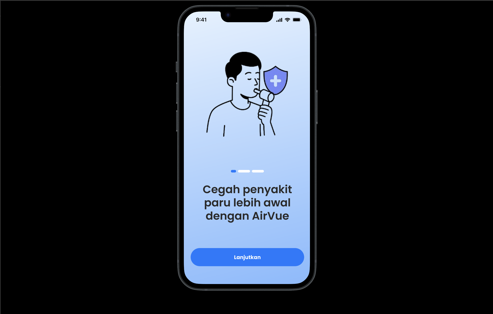
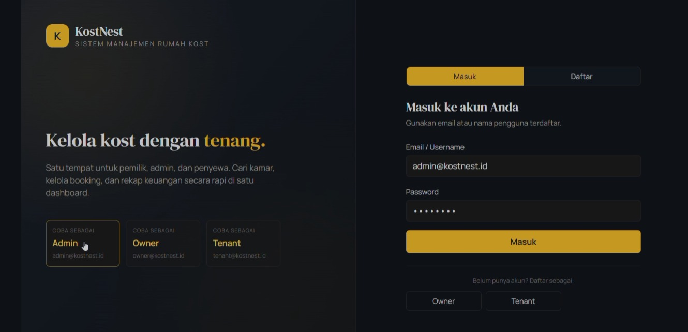
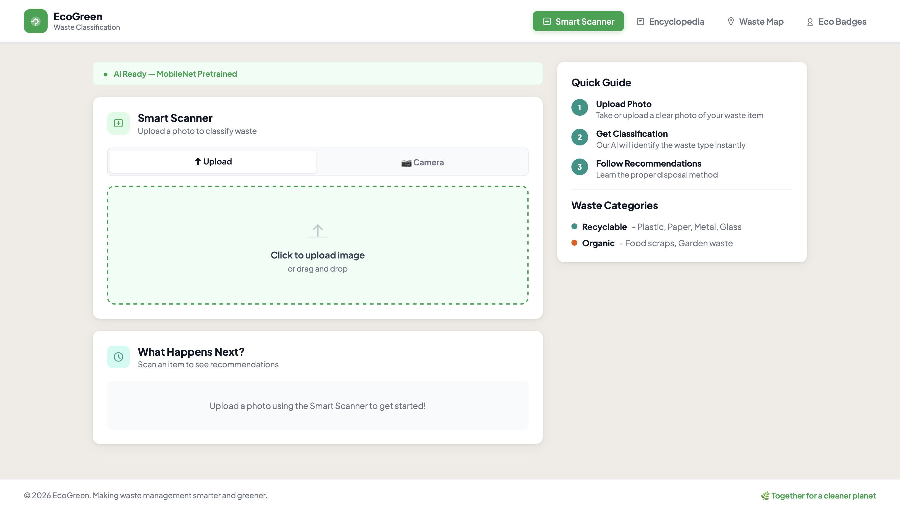
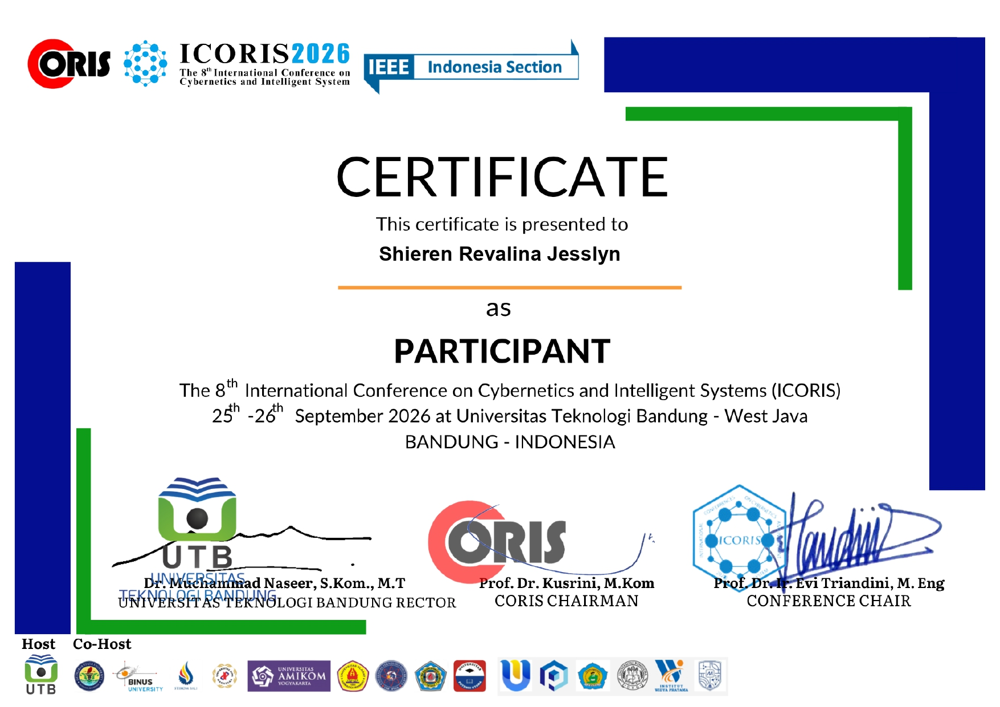

Desain UI/UX
AirVue Business
Prototipe desain aplikasi bisnis di Figma — perancangan antarmuka dan alur pengguna (user flow) yang interaktif.
Lihat Prototipe →Exploring Technology, Creating Solutions
Saya menekuni bidang data analytics — mengolah, menganalisis, dan memvisualisasikan data untuk menghasilkan insight yang mendukung pengambilan keputusan. Saya tertarik pada analisis data dengan SQL, Python, dan tools visualisasi, serta senang menemukan pola dari data yang kompleks. Saat ini saya terbuka untuk peluang internship sebagai Data Analyst.
Saya mahasiswa Computer Science dengan peminatan Data Analyst. Saya terbiasa mengumpulkan, membersihkan, dan menganalisis data, lalu menyajikannya dalam bentuk visualisasi dan laporan yang mudah dipahami. Saya menguasai SQL dan Python (pandas, NumPy) untuk analisis, serta terbiasa membuat dashboard menggunakan Excel, Tableau, atau Power BI. Saya berpikir analitis, teliti pada detail, dan senang menerjemahkan data menjadi rekomendasi yang berdampak bagi bisnis.

Prototipe desain aplikasi bisnis di Figma — perancangan antarmuka dan alur pengguna (user flow) yang interaktif.
Lihat Prototipe →
Aplikasi pengelolaan rumah kost untuk mendata kamar, penghuni, dan pembayaran. Proyek kolaborasi tim yang tersedia di GitHub.
Lihat Kode →
Aplikasi web klasifikasi sampah untuk membantu memilah jenis sampah secara otomatis. Sudah di-deploy dan dapat diakses online.
Lihat Proyek →Abstract — This study presents a waste classification application that integrates MobileNetV4 and YOLOv8 to classify waste into organic and recyclable categories. MobileNetV4 provides lightweight, accurate classification while YOLOv8 enables real-time detection through an intuitive interface…
Pengembangan aplikasi EcoGreen yang mengintegrasikan MobileNetV4 dan YOLOv8 untuk klasifikasi sampah organik & daur ulang, dilengkapi Smart Scanner, Trash Encyclopedia, Waste Map, dan EcoBadges.
Baca Paper →Abstract — Five deep learning models (CNN, MobileNetV4, YOLOv8, EfficientNetB0, ResNet50) are evaluated on 21,076 waste images using accuracy, precision, recall, and F1-score. MobileNetV4 achieved the best performance with ~98% accuracy across evaluation metrics…
Perbandingan lima model deep learning (CNN, MobileNetV4, YOLOv8, EfficientNetB0, ResNet50) untuk klasifikasi sampah pada 21.076 citra. MobileNetV4 mencapai akurasi tertinggi ~98,5%.
Baca Paper →Abstract — A smart traffic light control system using Fuzzy Logic. It uses waiting time and number of vehicles to decide the green-light duration, giving more flexible signal control than a fixed-time approach for intersection management…
Sistem lampu lalu lintas pintar berbasis Fuzzy Logic yang mempertimbangkan jumlah kendaraan dan waktu tunggu untuk menentukan durasi lampu hijau secara adaptif, sebagai alternatif sistem fixed-time.
Baca Paper →
IEEE · ICORIS 2026Sertifikat sebagai peserta ICORIS 2026 di Universitas Teknologi Bandung, 25–26 September 2026.
Terbuka untuk kolaborasi, diskusi proyek, atau peluang magang. Yuk terhubung!